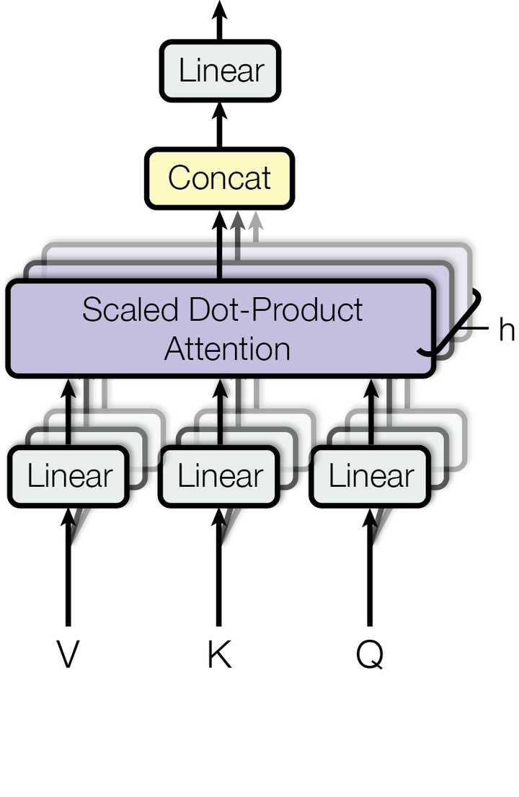

Qwen3-0.6B in a kernel

Qwen3-0.6B is the default checkpoint: 28 layers, a 1024-dimensional residual stream, 16 query heads against 8 key/value heads in grouped-query attention, and int8 quantisation bringing it to roughly 570 MB on disk. Loading it revealed two ways in which it differs from a Llama, and the interesting property of both is that getting them wrong raises nothing.
Head width is stated, not derived
Almost every implementation computes the head dimension as dim / n_heads, because for Llama that is the definition. For Qwen3 that arithmetic gives 1024/16 = 64, and the correct answer is 128. The architecture states head width as an independent hyperparameter, which makes the query projection 2048 wide against a residual stream of 1024. The attention path is deliberately wider than the thing it reads from, and narrows again on the way out.
Derive it instead and every attention tensor gets reshaped along the wrong axis. The shapes remain self-consistent, which is the trap, since 64 divides 1024 perfectly well, so nothing asserts, nothing overflows, and the model loads and runs and produces confident nonsense. The source comment on that field names it as the first thing to suspect when a converted model is fluent and wrong.
QK-Norm
Qwen3 also applies RMSNorm to each head's queries and keys, per head, before rotary embeddings go on. Omitting the step leaves the network numerically well-behaved, since the vectors come out only a little longer than they should be and softmax absorbs most of the difference, and it will keep producing fluent English. The text is coming from a network being fed activations at a scale it never saw in training, which is a model hallucinating for a mechanical reason, and the mechanical kind does not go away with a better prompt.
How these get caught
Not by exceptions, because there are none to catch. Three things are doing the work instead.
First, the checkpoint converter writes both facts into the file header, so head width and the QK-norm flag travel with the weights and are never guessed at load time. That is what version 3 of the GLADOSM3 format added; version 2 files still load, and their defaults are exactly the Llama ones, which is correct for every checkpoint that predates the problem.
Second, there is a NumPy reference implementation that reads the converted file rather than the original safetensors. This matters more than it sounds: a converter bug shows up in the reference too, so a mismatch between reference and kernel isolates the fault to the Rust side, and agreement between them plus wrong output isolates it to the converter.
Third, and cheapest: read what comes out. An instruction-tuned model with a correctly wired attention path answers "what is the capital of France" with Paris. One with a subtly scrambled one writes a fluent paragraph that never quite arrives at the fact. Having a known answer to check against is worth a surprising amount when there is no error to catch.
Thinking tokens
Left to itself, Qwen3 reasons at length inside a <think> block before answering. That is the model working exactly as designed and completely useless at a 64-token budget, where the entire generation is spent deliberating and the answer never arrives. So ask closes the block itself unless given -t.
Whether a checkpoint has thinking tokens at all is decided by asking the tokenizer whether it knows <think> as a single token. That is a property of the vocabulary, which is a fact, as opposed to pattern-matching on the model's filename, which is a guess that fails the first time someone renames a file.
Getting it onto the machine
The checkpoint arrives as safetensors and is flattened by a converter into a layout the kernel indexes by arithmetic: a header followed by tensors in a fixed order, so loading is a matter of computing offsets against a buffer that was read before ExitBootServices. Nothing is rearranged at boot, because rearranging 570 MB at boot would require somewhere to put it.
The context window is a converter argument, and the KV cache is what bounds it, not the model. Qwen3 at 512 tokens costs 112 MiB of kernel heap, and the converter prints that figure at conversion time so the decision is made where the trade-off is visible, instead of being discovered as an allocation failure on a laptop with no debugger attached.
Int8 quantisation is per-block with an f32 scale, which matters for the same reason it matters in the KV cache: transformer weights have outliers, and one scale across an entire tensor spends most of its dynamic range representing a handful of large values badly while flattening everything else.
Running it at all
Qwen3-0.6B only runs on real hardware. QEMU's built-in FAT support caps the whole emulated disk at 516 MB. (fat:32: raises that in principle, but QEMU describes its FAT32 as untested and the firmware cannot read the directory it produces.) So QEMU work uses the SmolLM2 checkpoint and the real model is only exercised on the GF63, or numerically against the reference implementation.